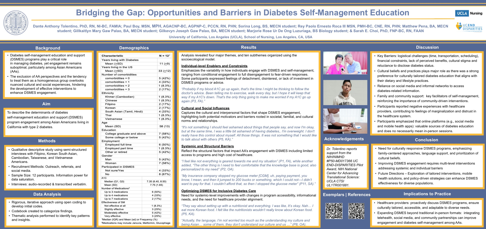

Poster · Sigma 36th International Nursing Research Congress · 2025
People want diabetes education that fits their lives and culture; cost, logistics, stigma, and past negative experiences with providers get in the way, while family, community, and online resources help.
This study asked Asian Americans with type 2 diabetes what helps and what gets in the way when they try to use diabetes self-management education and support. Barriers included time, transportation, and scheduling, as well as cost, cultural stigma, and negative experiences with healthcare providers. What helped: culturally tailored education, family and community support, and trusted information from social media and apps. The takeaway is a need for culturally responsive programs that meet people where they are, including online.
A qualitative study of Asian Americans with type 2 diabetes, part of the lab’s broader work on diabetes self-management education and support (DSMES).
The findings informed the lab’s published paper, “Navigating type 2 diabetes care: Asian American perspectives on self-management education and support.”
Time, transportation, cost, cultural stigma, and distrust after negative provider experiences.
Family and community support, and culturally tailored education.
Social media and apps are valued sources of education, not just in-person sessions.
